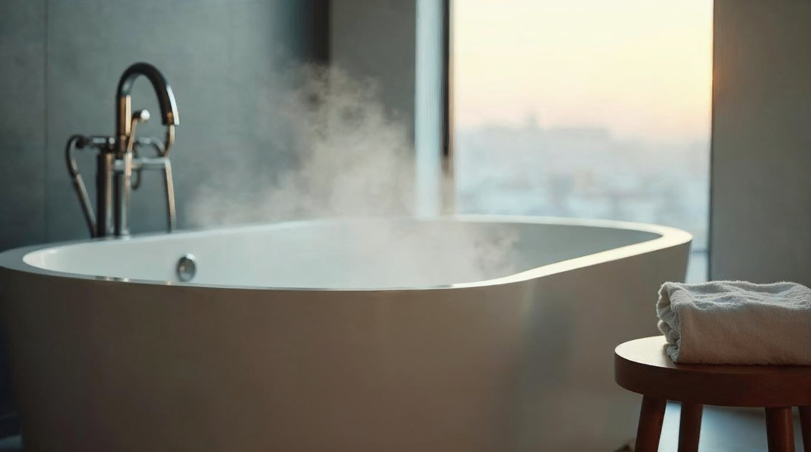
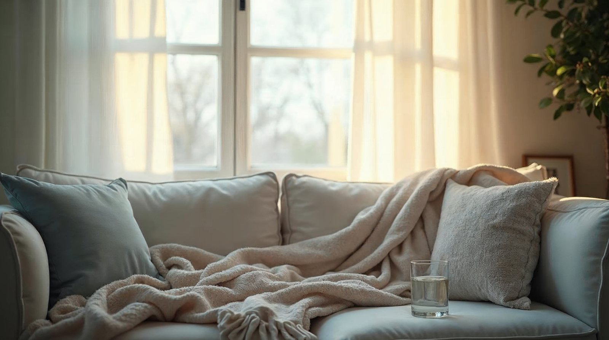
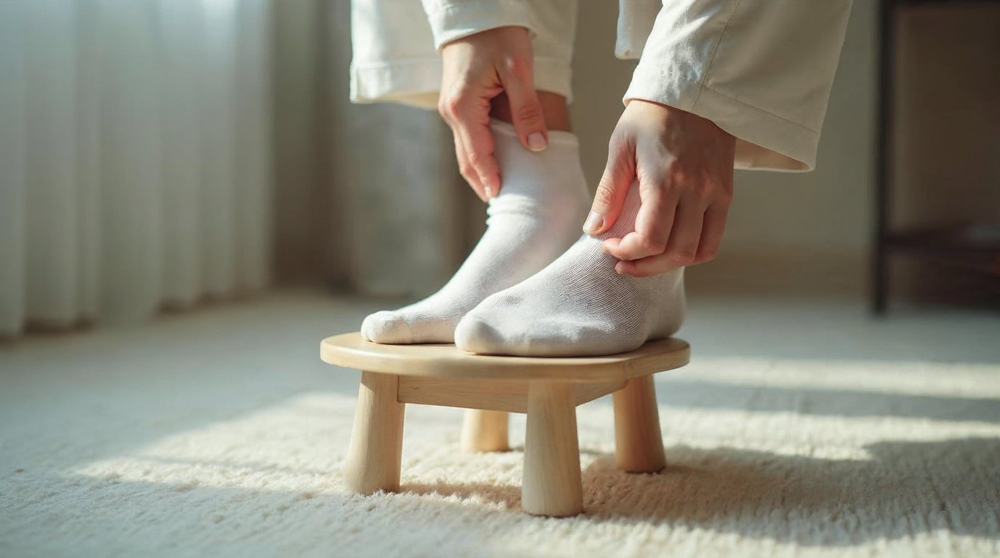
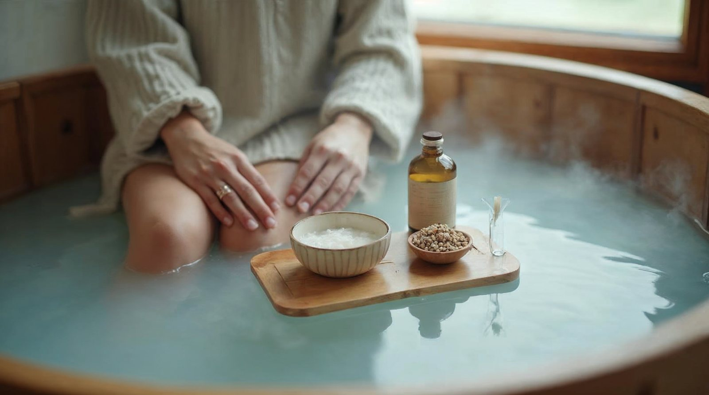

이종호 한의사 감수좋은꿈참사랑한의원 대표원장 (한의사 면허번호 19769)발행 2026-11-25 · 수정 2026-11-25
이 글의 차례
퇴근길, 운동 가방을 어깨에 멘 채 한의원 문을 엽니다. 오늘은 허리에 약침을 맞는 날입니다. 끝나면 바로 헬스장에 갈 생각이었고, 주말에는 목욕탕에서 뜨거운 탕에 몸을 푹 담글 계획도 세워 두었습니다. 그런데 치료를 마치고 신발을 신다가 문득 망설여집니다. 오늘 운동해도 되나? 탕에 들어가도 괜찮을까?
진료실에서 이런 질문을 정말 자주 받습니다. 운동이 하루의 숨통인 분, 목욕탕 가는 날만 손꼽아 기다리시는 분께는 하루 쉬시라는 말이 서운하게 들릴 수도 있겠지요. 몸을 아끼려고 하는 운동이고, 피로를 풀려고 가는 목욕인데 말입니다. 그 마음을 알기에 저는 하지 마시라는 말보다 오늘은 이렇게 바꿔 보시자는 말로 설명드리려고 합니다.
약침은 침 자리에 약액을 넣는 방법입니다. 그래서 맞은 날만큼은 그 자리가 쉬도록 생활을 조금 조절하시는 편이 좋습니다. 격한 운동과 뜨거운 목욕, 사우나는 다음 날로 미루고, 그날은 짧고 미지근한 샤워와 가벼운 산책 정도로 지내시면 무난합니다. 하루를 이렇게 보내 두면 다음 날 몸 상태를 살피기도 한결 쉬워집니다.
붓기나 열감이 이어지면 그때는 연락해 주시면 됩니다.
왜 그날 하루는 쉬어 가는 편이 좋을까요
약침을 맞은 자리는 잠시 뻐근하거나 붓는 느낌이 들 수 있습니다. 약액이 들어간 자리라 몸이 받아들이는 시간이 조금 필요합니다. 그렇다고 꼼짝 않고 누워만 계실 필요는 없습니다. 쉬어 가시라는 말은 놓은 자리에 힘이 크게 실리거나 몸에 열이 확 오르는 일을 하루만 피하시라는 뜻입니다. 가볍게 걷는 정도는 그날도 괜찮습니다.
여기에 뜨거운 물과 땀이 더해지면 놓은 자리가 더 자극될 수 있습니다. 사우나나 찜질방에서 땀을 흠뻑 흘리고 나면 그 자리가 화끈거린다고 하시는 분들이 있습니다. 격한 운동도 마찬가지입니다. 허리에 약침을 맞은 날 저녁에 무거운 중량 운동을 하면, 쉬어야 할 자리에 다시 부담이 실립니다.
그날 뜨거운 탕에 30분씩 몸을 담그거나 무거운 운동을 하신 뒤, 놓은 자리가 더 붓거나 뻐근함이 길어졌다고 말씀하시는 분들이 있습니다.
위생도 생각해야 합니다. 약침을 놓은 피부 자리는 아주 작지만, 아물 시간을 주는 것이 좋습니다. 대중목욕탕이나 수영장처럼 여러 사람이 함께 쓰는 물은 하루쯤 미루시는 편이 마음이 편합니다.
술은 그날만큼은 쉬어 가세요. 술을 마시면 붓기와 열감이 더 느껴질 수 있고, 다음 날 놓은 자리의 상태를 살피기도 어려워집니다. 놓은 자리가 옷이나 가방끈에 계속 쓸리는 곳이라면, 그날은 그 자리를 조이지 않는 옷을 입고 가방은 반대쪽으로 메 주세요.

뻐근하다고 뜨겁게 풀지는 마세요
약침을 맞은 자리가 뻐근하면 뜨거운 찜질로 풀고 싶어지는 게 당연합니다. 그런데 그날 바로 뜨겁게 데우면 오히려 붓기가 더 느껴질 수 있습니다. 손으로 자꾸 문지르거나 주무르는 것도 같은 이유로 피해 주세요. 그날은 그대로 두시는 편이 좋습니다.
다음 날에도 뻐근함이 이어진다면 참고 넘기지 마시고 다음 진료 때 말씀해 주세요. 찜질을 해 보고 싶다면 다음 날부터, 15~20분 정도로 시간을 정해 하시고 중간에 피부를 한 번 들여다보세요. 따뜻하게 한 뒤 시원하게 풀리면 이어 가도 좋지만, 욱신거림이 늘면 멈추시면 됩니다.
이런 분들을 자주 뵙습니다
퇴근 뒤 헬스장에서 하체 운동을 하시는 분들이 많습니다. 허리나 무릎에 약침을 맞은 날이라면 그날은 러닝머신에서 천천히 걷는 정도로 바꾸시라고 말씀드립니다. 다음 날 아침 놓은 자리에 뻐근함이 크지 않다면, 평소 들던 무게의 70% 정도로 가볍게 시작해 보세요.
운동 다음 날 불편이 늘지 않으면 조금씩 되돌리고, 늘면 그 동작은 잠시 쉬면서 다음 진료 때 함께 정합니다.
주말마다 목욕탕에 가시는 어르신들도 자주 뵙습니다. 어깨에 약침을 맞는 날과 목욕 가는 날이 겹치지 않도록 진료 요일을 함께 정해 드리기도 합니다. 겹쳤다면 그날은 집에서 짧게 씻으시고, 때를 미는 일은 다음 목욕 때 놓은 자리를 피해서 하시면 됩니다.
수영 강습을 다니는 분들은 약침을 맞은 날 강습을 하루 쉬시는 편이 좋습니다. 다음 날 놓은 자리에 붉은 기나 진물이 없는지 보신 뒤 다시 시작하세요.
아이를 안고 재우느라 손목과 어깨가 아파 약침을 맞는 분들은 그날 밤에도 아이를 안아야 합니다. 이런 분께는 아이를 안을 때 양팔로 받치거나 아기띠를 써서 한쪽에 무게가 몰리지 않게 해 보시라고 말씀드립니다. 아이 목욕은 그날만큼은 다른 가족에게 부탁하시고요.
등산이나 골프, 마라톤처럼 날짜가 정해진 약속이 있는 분들도 계십니다. 이런 분께는 그 날짜를 먼저 여쭙고, 약침을 언제 어느 부위에 맞을지 일정에 맞춰 거꾸로 계산해 함께 정합니다. 큰 약속 바로 전날 처음 약침을 맞는 일은 되도록 피하시는 편이 서로 마음이 편합니다.
약침 맞는 날, 일정은 이렇게 잡아 보세요
약침을 맞는 날의 일정을 조금만 바꿔도 하루가 한결 편해집니다. 전날에는 잠을 충분히 주무시고, 당일에는 가볍게 식사하고 오세요. 감기 기운이나 열이 있다면 진료 시작 때 먼저 말씀해 주셔야 합니다. 운동을 꼭 하셔야 하는 날이라면 운동을 먼저 마치고 땀을 식힌 뒤 오시는 방법도 있습니다. 그러면 약침을 맞은 뒤에는 집에 가서 쉬기만 하면 되니까요.
반대로 약침을 맞고 곧장 운동하러 가거나 목욕탕에 들르는 일정은 되도록 피해 주세요.

맞은 날 저녁부터 다음 날 아침까지
진료실을 나서기 전, 몇 분 앉아서 어지럽지 않은지 확인하고 일어나세요. 집에 가서 바로 씻기보다 몇 시간 지난 뒤 미지근한 물로 10분 안팎 짧게 샤워하시면 됩니다. 놓은 자리는 비누 거품으로 가볍게만 씻고, 때수건이나 거친 수건으로 문지르지 마세요. 물기는 수건으로 가볍게 눌러 닦습니다.
놓은 자리에서 피가 조금 비치면 깨끗한 솜이나 거즈로 잠시 눌러 주세요. 대개 곧 멎습니다. 멎지 않거나 붓기가 커지면 전화로 알려 주세요.
그날 저녁은 가벼운 산책 정도면 충분합니다. 술자리는 가급적 미루고, 평소보다 조금 일찍 잠자리에 드세요. 술 없이 푹 자고 일어나야 다음 날 아침 놓은 자리의 상태를 있는 그대로 살필 수 있습니다.
다음 날 아침에는 놓은 자리를 한번 들여다보세요. 붓기나 붉은 기, 가려움은 어떤지, 눌렀을 때 화끈거림이 커지지는 않았는지요. 휴대폰으로 사진을 한 장 찍어 두시면 다음 진료 때 비교하기 좋습니다. 붓기와 열감이 없다면 가벼운 운동부터 시작하셔도 됩니다. 평소 강도로 되돌리는 시기는 다음 진료 때 같이 정하면 됩니다.
오늘 밤 씻기 전에 스스로 한번 물어보세요. 맞은 지 몇 시간이 지났는가? 놓은 자리가 손바닥보다 넓게 붉거나 부어 있지는 않은가? 새로 생긴 가려움이나 두드러기는 없는가? 저녁 운동과 목욕 계획은 가볍게 바꿔 두었는가? 하나라도 마음에 걸린다면 무리하지 마시고, 붓기나 열감이 함께 있다면 전화로 알려 주세요.

운동은 이렇게 되돌려 보세요
다음 날부터 운동을 다시 시작할 때는 종류에 따라 순서를 두면 편합니다. 걷기나 가벼운 실내 자전거처럼 리듬이 일정한 운동이 먼저입니다. 달리기나 줄넘기처럼 충격이 되풀이되는 운동, 무거운 중량을 드는 운동은 그다음이고, 골프나 테니스처럼 몸을 세게 비트는 운동은 놓은 자리가 편안한지 확인한 뒤에 하시면 됩니다.
약침을 맞은 부위를 직접 많이 쓰는 동작은 조금 더 아껴 주세요. 어깨라면 팔을 머리 위로 높이 드는 동작, 무릎이라면 깊이 쪼그려 앉거나 계단을 뛰어오르는 동작, 허리라면 바닥의 무거운 것을 허리 힘으로 들어 올리는 동작이 그렇습니다. 운동 전후로 5분쯤 가볍게 몸을 데우고 식히는 것도 잊지 마세요.
운동한 다음 날 아침, 놓은 자리가 전날보다 편한지 불편한지만 확인해도 다음 단계를 정하기가 훨씬 쉬워집니다.

목욕과 사우나는 이렇게 다시 시작하세요
다음 날 아침 놓은 자리에 붓기와 열감이 없다면 목욕도 다시 하셔도 됩니다. 다만 처음 다시 가는 날은 평소보다 짧게, 탕도 너무 뜨거운 쪽보다 미지근한 쪽부터 들어가 보세요. 놓은 자리는 며칠 동안 때를 밀지 말고 비누로만 가볍게 씻으시면 됩니다.
사우나나 찜질방의 뜨거운 방에 오래 앉아 땀을 흠뻑 빼는 일은, 놓은 자리가 편안한 것을 한 번 더 확인한 다음으로 미뤄 두세요.
땀을 쭉 빼야 개운하다는 분들이 많습니다. 그 개운함이 고단한 한 주를 버티게 해 주는 힘이라는 것도 압니다. 그래도 약침을 맞은 그날만큼은 그 개운함을 하루 뒤로 미뤄 주셨으면 합니다.
얼마나 지켜보고, 언제 진료를 받을까요
놓은 자리의 뻐근함이나 작은 멍은 며칠 사이 옅어지는 경우가 많습니다. 멍은 처음에 푸르스름하다가 누르스름하게 옅어져 가는 것이 흔한 모습입니다. 하루 이틀은 무리하지 않고 지켜보시다가 다음 진료 때 말씀해 주세요. 뻐근함이 하루 넘게 이어진다면 다음 진료에서 반응을 함께 보겠습니다.
2~3일이 지나도 붓기와 열감이 커지거나 진물이 생기면 다음 진료를 기다리지 마시고 전화(02-815-7510)로 먼저 알려 주세요. 운동을 다시 시작한 뒤 같은 자리가 다음 날마다 더 뻐근해진다면, 그 운동은 잠시 쉬고 진료 때 이야기해 주세요.
다음과 같은 경우에는 기다리지 말고 먼저 확인을 받으세요.
- 놓은 자리가 붉게 붓고 뜨거우며 열이 나는 경우
- 온몸에 두드러기가 돋거나 숨이 가쁘고 얼굴이 붓는 경우
- 놓은 자리 통증이 점점 심해지는 경우
- 멍이 넓게 퍼지면서 통증도 함께 심해지는 경우
숨이 차거나 얼굴이 붓는다면 알레르기 반응일 수 있으니 기다리지 말고 가까운 응급실에서 바로 확인을 받으세요. 복용 중인 약은 처방한 의사와 상의 없이 줄이거나 끊지 않습니다.
좋은꿈참사랑한의원에 처음 오시면
처음 오시면 저는 어디가, 언제부터, 어떤 동작에서 불편한지부터 여쭙고, 약이나 음식에 알레르기가 있었는지, 지금 드시는 약이 무엇인지 꼭 확인합니다. 예전에 약침을 맞고 붓거나 가려웠던 적이 있는지, 평소 저녁에 운동을 하시는지, 목욕이나 사우나를 즐기시는지, 술은 얼마나 드시는지도 이때 함께 듣습니다.
약침 뒤의 생활을 정할 때 이 이야기들이 바탕이 됩니다. 혈액을 묽게 하는 약을 드시는 분은 멍이 더 잘 생길 수 있어 꼭 미리 말씀해 주세요.
그다음 양손의 맥을 짚습니다. 그날의 피로와 몸 상태를 살피고, 잠과 소화, 몸이 찬 편인지도 여쭙습니다. 이어서 아픈 자리를 눌러 보고 움직여 보며, 부위의 깊이와 구조에 따라 필요하다고 판단되면 초음파로 근육과 힘줄, 주변 구조를 함께 봅니다.
침, 약침, 추나 가운데 무엇을 쓸지는 상태에 맞춰 정하고, 약침을 한다면 어느 부위에 왜 하는지, 놓은 자리에 통증이나 멍이 생길 수 있고 드물게 알레르기 반응이 있을 수 있다는 점까지 먼저 말씀드립니다. 약침의 종류나 비용, 보험 적용이 궁금하시면 방문 전 전화로 확인해 주세요.
진료를 마치기 전에는 오늘 피할 운동과 목욕, 다음에 확인할 일을 알려 드립니다. 운동을 계속하셔야 하는 분이라면 강도와 일정을 함께 정하고, 같은 부위 통증이 되풀이된다면 생활 속 동작도 이어서 살핍니다. 다시 오시면 지난번 약침을 맞은 날 운동이나 목욕을 하셨는지, 다음 날 놓은 자리에 붓기나 가려움이 있었는지부터 여쭙습니다.
그날 술을 드셨는지와 잠을 몇 시간 주무셨는지, 통증이 덜하거나 더한 동작, 새로 드시기 시작한 약이 있다면 짧게 적어 오세요.
마치며
운동이든 목욕이든, 평소 몸을 돌보던 방법을 하루 미루는 일이 생각보다 아쉽다는 것을 압니다. 그 습관 덕분에 지금까지 버텨 오셨을 테니까요. 그래도 약침을 맞은 날 하루만큼은 그 자리에 쉴 틈을 주세요. 걷기는 그대로, 샤워는 짧게, 탕과 사우나는 내일로. 그 정도면 충분합니다.
다음에 오시면 약침을 맞은 날 저녁을 어떻게 보내셨는지, 다음 날 아침 놓은 자리가 어땠는지부터 여쭙겠습니다.
함께 읽으면 좋은 글
- 약침을 받기 전에 한의원에 꼭 알려야 하는 것은 무엇인가요?
- 침을 맞은 날 샤워나 목욕은 언제 해도 되나요?
- 치료 받는 동안 운동은 쉬어야 하나요, 계속해도 되나요?

왜 그날 하루는 쉬어 가는 편이 좋을까요
- 약침을 맞은 자리는 잠시 뻐근하거나 붓는 느낌이 들 수 있습니다.
- 약액이 들어간 자리라 몸이 받아들이는 시간이 조금 필요합니다.
뻐근하다고 뜨겁게 풀지는 마세요
- 약침을 맞은 자리가 뻐근하면 뜨거운 찜질로 풀고 싶어지는 게 당연합니다.
- 그런데 그날 바로 뜨겁게 데우면 오히려 붓기가 더 느껴질 수 있습니다.
이런 분들을 자주 뵙습니다
- 퇴근 뒤 헬스장에서 하체 운동을 하시는 분들이 많습니다.
- 허리나 무릎에 약침을 맞은 날이라면 그날은 러닝머신에서 천천히 걷는 정도로 바꾸시라…
약침 맞는 날, 일정은 이렇게 잡아 보세요
- 약침을 맞는 날의 일정을 조금만 바꿔도 하루가 한결 편해집니다.
- 전날에는 잠을 충분히 주무시고, 당일에는 가볍게 식사하고 오세요.
자주 묻는 질문
헬스는 언제부터 해도 되나요?
대개 다음 날부터 가볍게 시작하고, 부위에 따라 진료 때 함께 정합니다.
샤워는 해도 되나요?
짧은 미지근한 샤워는 대개 괜찮습니다.
가려우면 어떻게 하나요?
긁지 말고, 붓기나 열감이 함께 있으면 전화로 알려 주세요.
약침 맞은 자리에 멍이 들었어요.
작은 멍은 며칠 사이 옅어지는 경우가 많습니다. 멍이 넓게 퍼지거나 통증이 심하면 연락해 주세요.
수영장은 언제부터 가도 되나요?
맞은 날은 쉬시고, 다음 날 놓은 자리에 붉은 기나 진물이 없는지 확인한 뒤 다시 시작하시길 권합니다.
좋은꿈참사랑한의원은 재진 때 지난번 이야기부터 이어서 여쭙니다. 진료시간과 예약은 오시는 길에서 확인하세요.
어디서 상담받을 수 있나요?
좋은꿈참사랑한의원은 서울 동작구 만양로2길 2 신성빌딩 3층·5층(서울 동작구 상도동, 7호선 상도역 3번 출구 근처)에 있습니다. 한의사 3명(이종호 대표원장, 조영기 수석진료원장, 정원영 진료원장)이 진료합니다. 진료시간은 평일 09:30~20:00(점심 13:00~14:00), 토·일·공휴일 09:30~15:00이며, 방문 전 전화로 확인을 권합니다. 예약은 네이버 예약, 카카오톡 상담, 전화 02-815-7510로 받습니다.
이 글은 일반적인 건강 정보이며 개인의 진단이나 치료를 대신하지 않습니다. 증상이 있거나 복용 중인 약이 있다면 진료를 통해 확인하세요. 치료 효과는 개인마다 다를 수 있습니다.
작성 기준: 일반적으로 알려져 있는 건강 정보를 참고해 정리했습니다(대표원장 감수). 증상 기록은 1~2주 동안 하루 1회, 비슷한 시간에 적어 오시면 지난 상태와 비교하기 쉽습니다.